Best AI Research Tools for Beginners
Start here if you want the fastest overview before drilling into narrower use cases.
Open starting guideCategory
Tutorials, comparisons, prompt examples, and beginner workflows for source discovery, fact-checking, literature scans, and research briefs.
source discovery, fact-checking, literature scans, and research briefs.
Use the comparison tables to decide which tool fits each job.
Start here
A strong category page should not make the reader guess which article matters first. These picks route a beginner into the fastest useful next step.
Start here if you want the fastest overview before drilling into narrower use cases.
Open starting guideUse a comparison page before you choose a subscription, workflow, or default tool in this cluster.
Open comparisonMove from tool discovery into a repeatable sequence that helps a beginner finish an actual task.
Open workflowUse a prompt library or checklist to tighten output quality before you publish, ship, or pay.
Open prompt or checklistUse the cluster well
This layer is here to increase search utility: when to use the category, what to compare, and how to avoid wasting a subscription on the wrong task.
You need help with source discovery, fact-checking, literature scans, and research briefs and want a task-first route instead of opening tools at random.
Do not treat brand awareness as proof. Use the comparison pages to check workflow fit, output quality, and review burden first.
Pick one guide, test one real task, and only then decide whether this cluster needs a paid tool or just a better workflow.
Look for pages with examples, prompts, checklists, and mistake prevention. Those are stronger than generic tool roundups.
Library

Learn how to move from a question to a source-backed brief with a clear workflow, examples, and beginner mistakes to avoid.

Learn how to compare research assistants by source quality and workflow fit with a clear workflow, examples, and beginner mistakes to.

Learn how to check claims before publishing or making decisions with a clear workflow, examples, and beginner mistakes to avoid.

Learn how to turn uploaded sources into summaries, outlines, and study aids with a clear workflow, examples, and beginner mistakes to.

Learn how to screen papers and organize findings without academic jargon with a clear workflow, examples, and beginner mistakes to avoid.

Learn how to know when sources matter more than open-ended reasoning with a clear workflow, examples, and beginner mistakes to avoid.

Learn how to collect, label, and verify links before writing with a clear workflow, examples, and beginner mistakes to avoid.

Learn how to ask clearer questions and get usable evidence summaries with a clear workflow, examples, and beginner mistakes to avoid.

Learn how to spot hallucinated sources, outdated facts, and weak summaries with a clear workflow, examples, and beginner mistakes to.

Learn how to study competitors, customers, and positioning with a repeatable process with a clear workflow, examples, and beginner.

A new reasoning model only matters if it changes long-context reliability, usable pricing, and agent workflow discipline in real work.

EMO-style modular training is less about research jargon and more about whether future models can scale without full-cost retraining.

Device intelligence standards matter only if they turn vague hardware AI claims into capabilities buyers can actually compare.

Benchmark headlines deserve skepticism when evaluation design accidentally rewards leaked reasoning instead of genuine task performance.
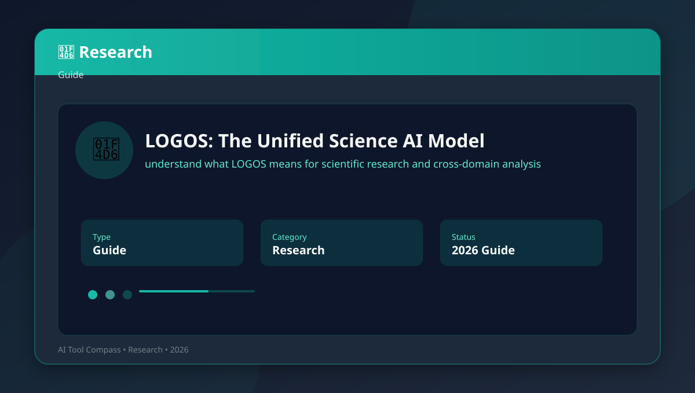
Unified science models matter when cross-domain insights outweigh specialized depth.
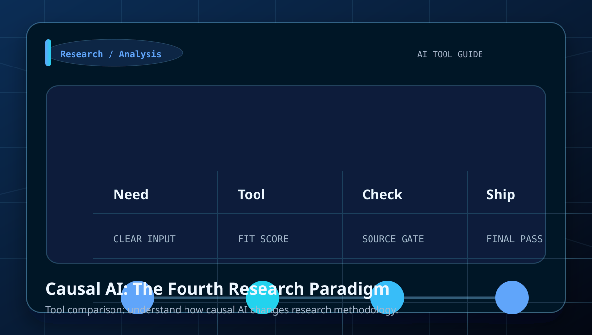
Causal AI matters when correlation-based approaches miss important mechanisms.
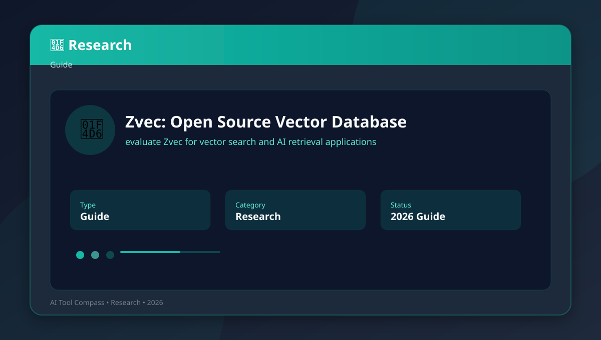
Vector databases matter for RAG systems and similarity search at scale.
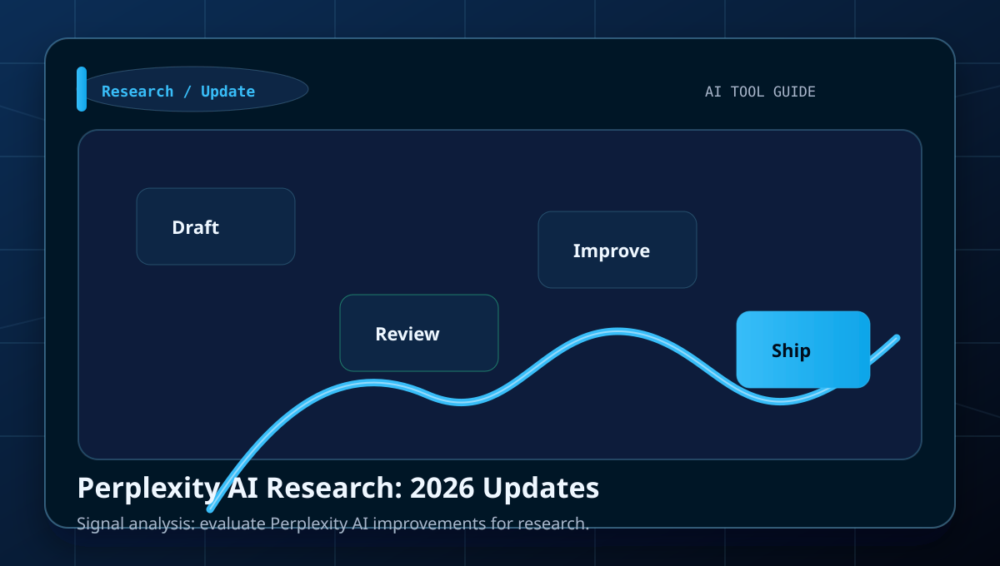
Search-focused AI improves when source quality and citation practices improve.
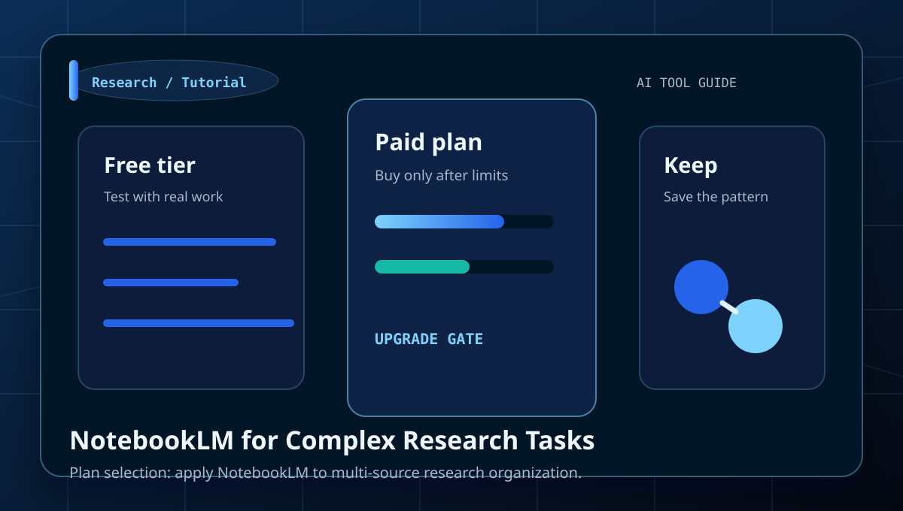
Notebook tools help when research requires persistent context across sessions.
Automation helps screening but human judgment remains essential for synthesis.
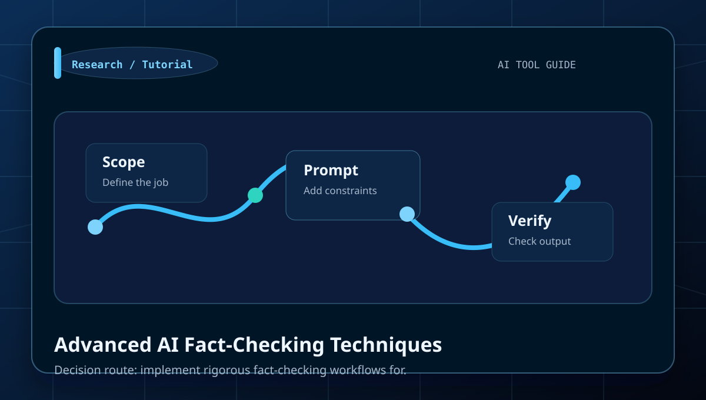
Fact-checking requires multiple verification sources and critical evaluation.
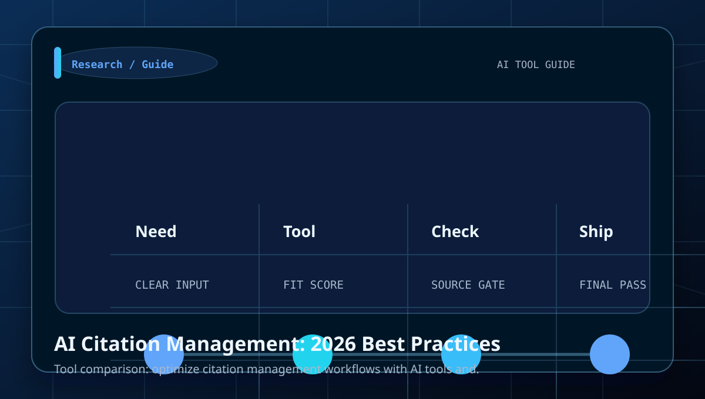
Citation management improves when AI handles collection, not final formatting.
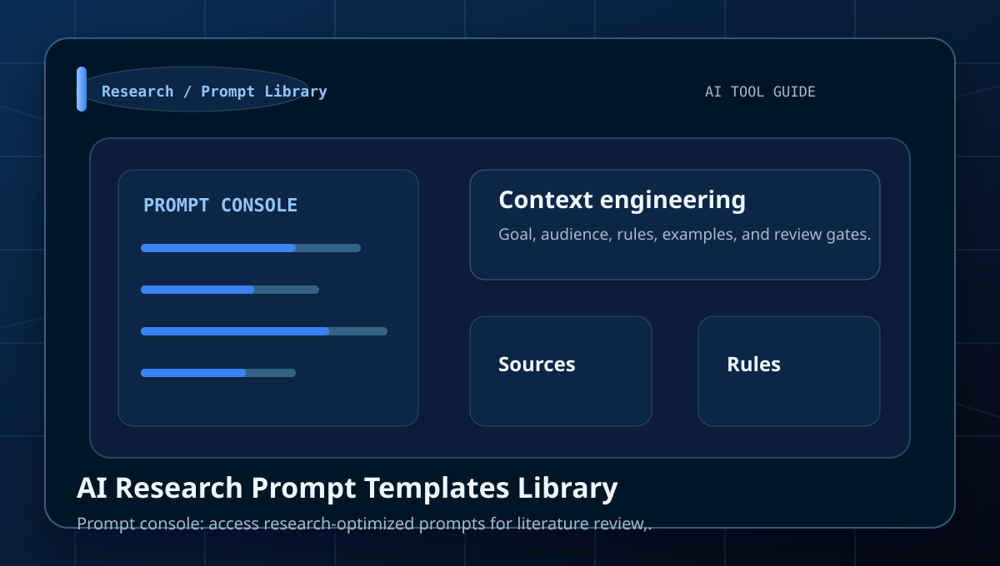
Prompt libraries work best when adapted to specific research contexts.
Market research automation accelerates data collection, not strategic interpretation.
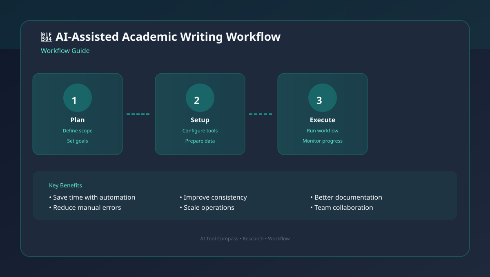
Academic writing AI works best for editing and structure, not content generation.
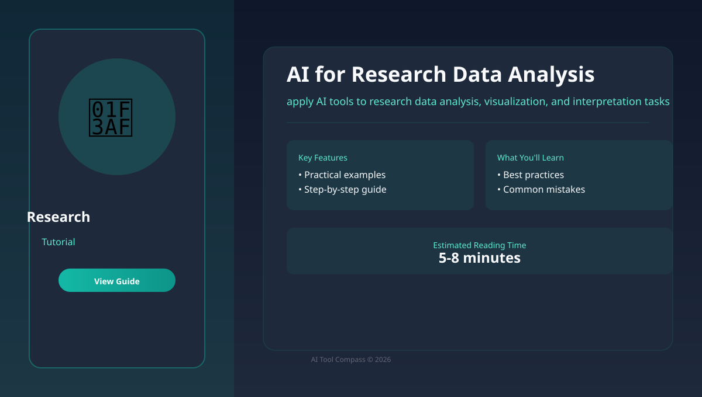
AI accelerates analysis but requires validation of statistical methods.
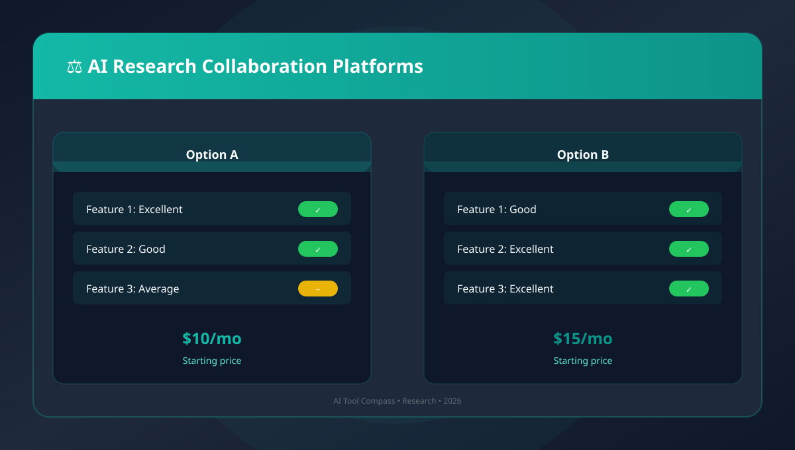
Collaboration AI helps coordination but doesn't replace domain expertise.
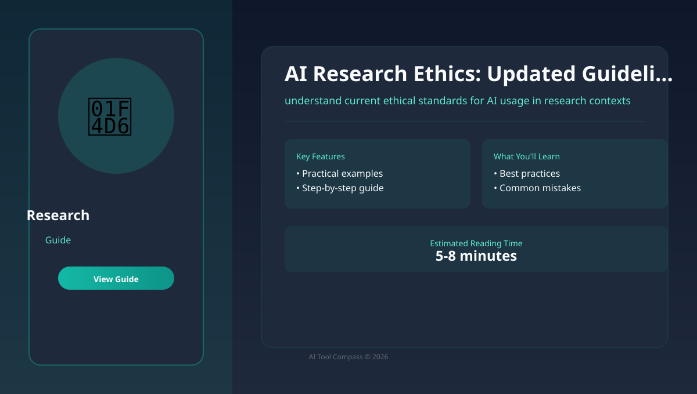
Research ethics evolve with AI capabilities; stay current with guidelines.
Future predictions should inform strategy, not dictate current decisions.